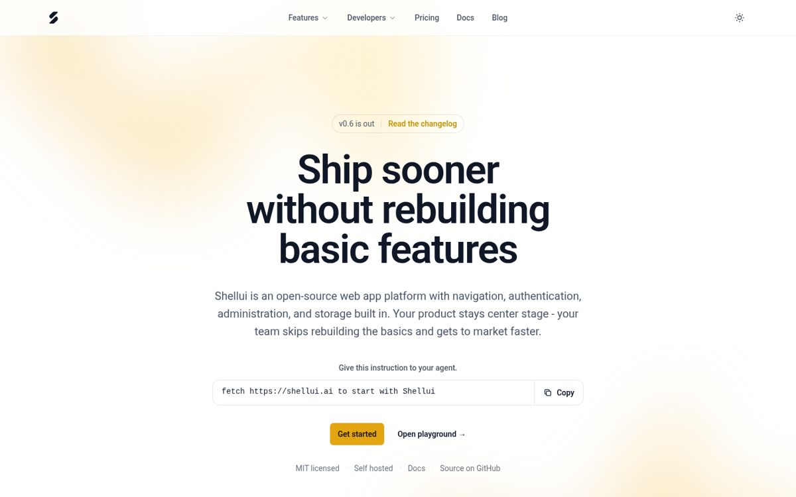

Before the move, each release meant updating login screens and settings pages in every app. After six weeks in the shell, the sample teams spent about 5 hours a week on those chores instead of 15.
Figure 2. Hours per week on release chores over six weeks. Example data.
Users get one sign-in and one navigation bar across every app. The home page of shellui.com runs the same shell chrome.

Figure 3. shellui.com home page, captured in October 2026.